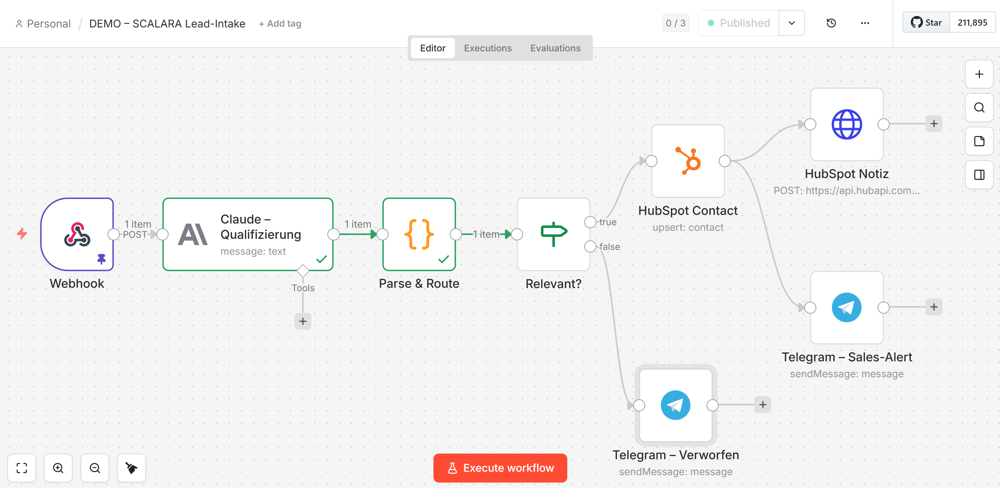
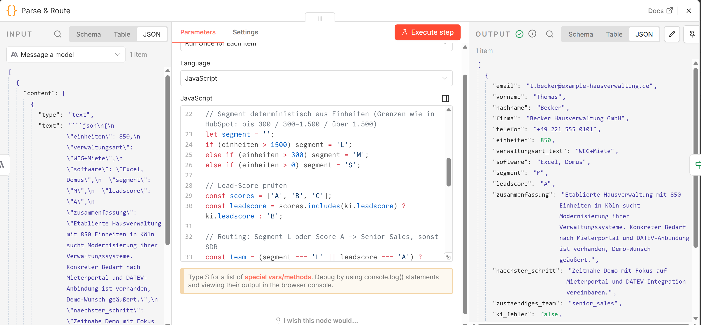
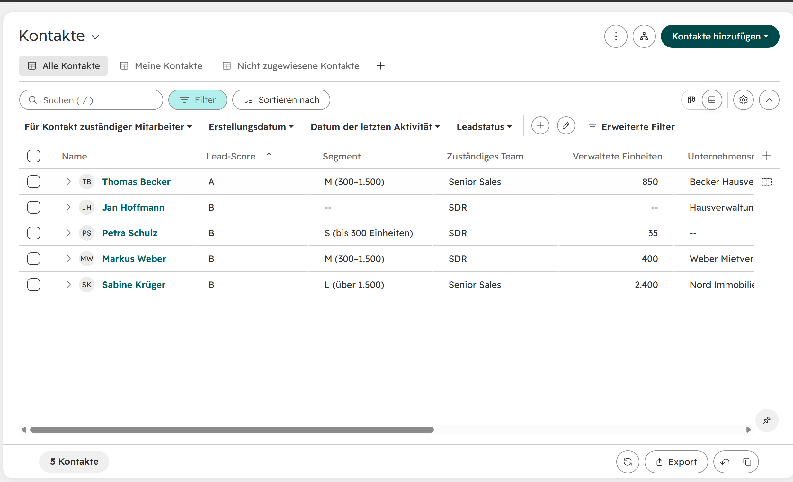
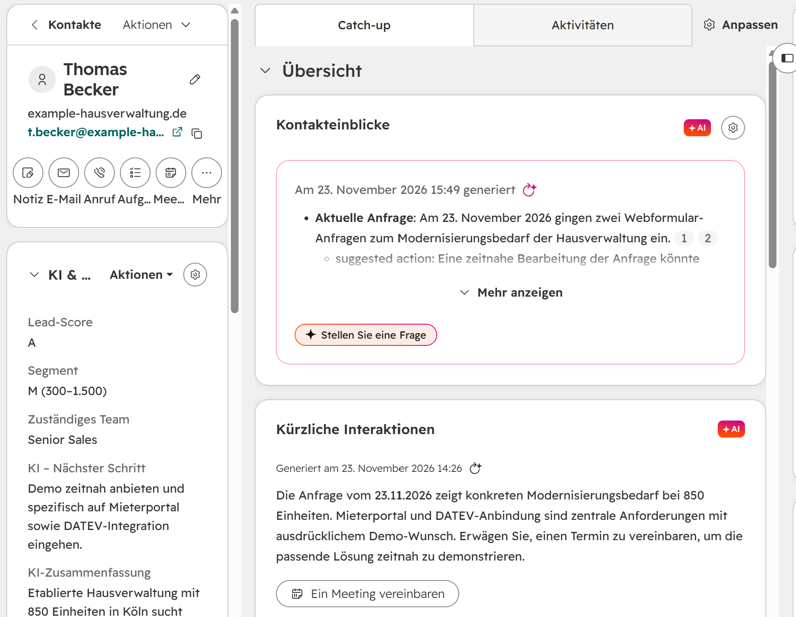
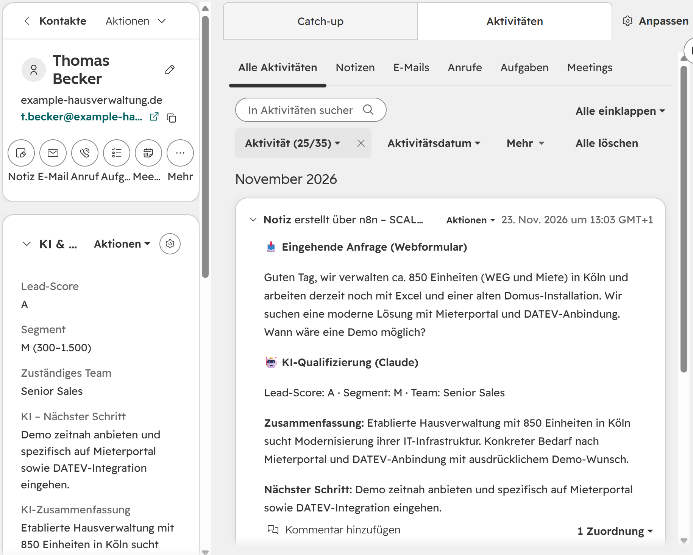
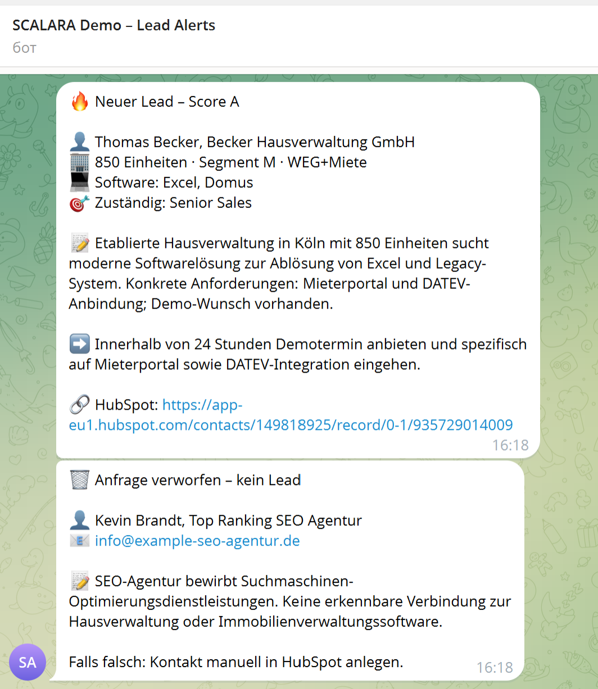

Arbeitsprobe · November 2026
Eine Anfrage aus dem Webformular ist nach wenigen Sekunden qualifiziert im CRM. Claude liest die Nachricht, n8n prüft die Regeln und verteilt den Lead, HubSpot speichert alles am Kontakt, und das zuständige Team bekommt eine Nachricht.
HubSpot war für mich neu. Vom ersten Login bis zur laufenden Integration habe ich zwei Arbeitstage gebraucht, inklusive Einarbeitung in das System.
Das Webformular sendet Name, Firma, E-Mail und Nachricht an einen Webhook. Ohne gültigen API-Key antwortet er mit 403.
n8n Webhook · Header-AuthEin deutscher Prompt liefert ein festes JSON mit sieben Feldern und der Einschätzung, ob es überhaupt ein Lead ist.
Claude Haiku 4.5Die Antwort wird bereinigt und gegen erlaubte Werte geprüft. Das Segment berechnet der Code selbst aus der Zahl der Einheiten.
n8n Code-Node „Parse & Route“Keine Hausverwaltung, kein Vermieter, kein Eigentümer: Die Anfrage wird verworfen und nur kurz gemeldet.
n8n IF-NodeDie E-Mail-Adresse dient als Erkennungsmerkmal. Ist sie noch unbekannt, legt HubSpot einen neuen Kontakt an. Ist sie schon vorhanden, wird der bestehende Kontakt aktualisiert. Dazu acht eigene Eigenschaften und eine Notiz mit dem Originaltext.
HubSpot Node · HubSpot API v3 (Notes)Kurze Zusammenfassung mit Score, Zuständigkeit, nächstem Schritt und Direktlink zum Kontakt.
Telegram Bot (austauschbar gegen Slack oder E-Mail)
Beispiel: „Guten Tag, wir verwalten ca. 850 Einheiten (WEG und Miete) in Köln und arbeiten derzeit noch mit Excel und einer alten Domus-Installation. Wir suchen eine moderne Lösung mit Mieterportal und DATEV-Anbindung. Wann wäre eine Demo möglich?“
| Feld | Ergebnis | HubSpot-Eigenschaft |
|---|---|---|
| Verwaltete Einheiten | 850 | verwaltete_einheiten |
| Verwaltungsart | WEG + Miete | verwaltungsart |
| Aktuelle Software | Excel, Domus | aktuelle_software |
| Segment | M (300–1.500) | segment |
| Lead-Score | A | leadscore |
| Zuständiges Team | Senior Sales | zustaendiges_team |
| KI-Zusammenfassung | Etablierte Hausverwaltung mit konkretem Bedarf an Mieterportal und DATEV-Anbindung, Demo ausdrücklich gewünscht. | kizusammenfassung |
| Nächster Schritt | Demotermin innerhalb von 24 Stunden anbieten, Schwerpunkt Mieterportal und DATEV. | ki_nachster_schritt |
Ein Sprachmodell versteht Freitext gut, hält sich aber nicht immer an Formate. In diesem Projekt hat Claude das JSON trotz klarer Anweisung in Markdown verpackt. Deshalb entscheidet die KI nur, was Interpretation braucht. Alles, was eine feste Regel ist, prüft der Code.





Ein Lead mit Score A kommt mit Zuständigkeit, Zusammenfassung, nächstem Schritt und Direktlink zum Kontakt an.
Eine verworfene Anfrage erscheint nur als kurzer Hinweis. Sie kostet keinen Platz im CRM, bleibt aber sichtbar. Wenn die KI falsch lag, legt ein Mensch den Kontakt mit einem Klick an.
Telegram ist hier der schnellste Kanal für die Demo. Im Vertrieb wäre das ein Slack-Kanal pro Team oder eine HubSpot-Aufgabe beim zuständigen Owner.
Jede Testanfrage prüft einen anderen Zweig der Logik.
| Anfrage | Einheiten | Segment | Score | Ergebnis |
|---|---|---|---|---|
| Becker Hausverwaltung, Köln, Demo-Wunsch | 850 | M | A | Senior Sales |
| Nord Immobilien, Hamburg, nur Marktsichtung | 2.400 | L | B | Senior Sales, weil Segment L |
| Weber Mietverwaltung, Düsseldorf, Preisanfrage | 400 | M | B | SDR |
| Private Vermieterin mit SEV-Mandaten | 35 | S | B | SDR, Verwaltungsart Miete |
| Hausverwaltung Hoffmann, München, ohne Größe | – | offen | B | SDR, Größe im Erstgespräch klären |
| SEO-Agentur mit Werbeangebot | – | – | C | verworfen kein CRM-Eintrag |
Die Tabelle oben zeigt den Stand nach den Korrekturen. Die ersten Durchläufe hatten drei Fehler.
Im ersten Testlauf nannte Claude die Vermieterin „gemischt“, gespeichert wurde daraus „WEG + Miete“, obwohl sie keine WEG verwaltet. Seitdem gibt der Prompt genau die Dropdown-Werte vor, und HubSpot hat eine eigene Option für SEV.
Im ersten Testlauf wurde die SEO-Agentur richtig mit C bewertet, landete aber trotzdem als Kontakt im CRM. Seitdem entscheidet ein eigenes Relevanz-Feld, ob überhaupt ein Kontakt entsteht. Im zweiten Durchlauf wurde die Anfrage verworfen und nicht mehr angelegt.
Beim Einrichten der HubSpot-Felder machte ein Leerzeichen vor einem Ausdruck aus dem Segment „ m“ statt „m“. n8n meldete Erfolg, das Dropdown blieb leer. Geprüft wird deshalb immer das gespeicherte Ergebnis, nicht nur der Status.
Der Webhook nimmt nur Anfragen mit API-Key im Header an. Tokens und Schlüssel liegen ausschließlich in den Credentials von n8n.
Das HubSpot-Konto liegt im EU-Rechenzentrum. Die Demo läuft auf meinem Testserver. Produktiv: n8n selbst gehostet in der EU oder n8n Cloud EU, mit AVV und Löschkonzept. Auch die HubSpot-KI verarbeitet Kundendaten und lässt sich bei Bedarf abschalten.
Die E-Mail-Adresse dient als Schlüssel. Gibt es den Kontakt schon, wird er aktualisiert statt neu angelegt. Schreibt ein Kunde zweimal, wächst der Verlauf, nicht die Datenbank.
Die KI bewertet und schlägt vor. Verworfene Anfragen bleiben sichtbar, und den nächsten Schritt entscheidet der Vertrieb.